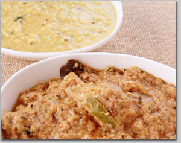

|

撮影：Sakano. J
プロローグ すべてはまかないからはじまった〜料理人が密かに食べるカレーとは〜
「痛てて、やっちまったよ」
キッチンの片隅でじゃがいもの皮むきをしていたら、ちょっとした油断から指を切ってしまった。
「しょうがないな。ハイ、コレつけて。すぐに治るヨ」
インド人シェフが独特のイントネーションの日本語とともにさしだしてくれたのは、店のカレー調理でもっとも頻繁に使うスパイスのひとつ、ターメリックの入った容器だった。
私は黄色い粉末を指でつまんではパラパラと傷口にふりかけた。ちょっとしみたが、すぐに血は止まった。
この厨房では、たまの切り傷にはいつもターメリックだった。ピッタリと確実に止血してくれるし、おまけに傷の治りもきれいではやい。傷薬として最適だった。
「まかないを食べすぎたかな。どうも胃が重くって」
「それじゃ、これでも食べなさい」
夕刻近い厨房、やはりインド人のシェフが私にくれたのはブラック・ペパーの粒が五個ほど。私は即席の黒い胃薬を口に含むとガリリと奥歯でいったんかみくだき、そのままゴクンと飲み込んだ。
それからふたたびディナーにむけての仕込みを続けた私だったが、気がつけば胃の不快感はすっかり解消して快調そのもの、むしろ体全体が軽くなったような爽快感を味わっていた。今夜もいい仕事のできそうな予感がした。
盛況だったランチ・タイムも一段落した昼下がり。レストランの外には、梅雨明けの太陽光に満ちた、すがすがしい光景が広がっていた。
「もうすぐ夏だねえ」
休憩のため、お客様用のいすに腰を降ろしホッと一息入れつつ、私がつぶやいた。すると、隣のいすに座っていたインド人シェフがニヤリと笑いながら、私の顔を見ながら力強い口調でこういった。
「そう、どんどんカレーの辛くなるシーズンがカミング。楽しみネ」
「えっ、どうしてですか」
シェフによれば、たとえインド以外のどんな場所にいようが、暑い季節にはカイエン・ペパーやブラック・ペパーを増やして、よりスパイシーで辛いカレーに仕上げたほうが「ボディとマインドにとってヘルシーでグッド」なのだそうだ。
駆け出しの私にはわかったようでわからない話だった。が、とにかく、唐辛子や黒こしょうが暑い季節の人の体にいい影響をおよぼすのは確実のようだった。
これらはすべてバブル経済の華やかだった一九八〇年代の後半、今も都内にある老舗インド料理店の厨房でひたすら地道な料理修業に励んでいた私が実際に体験した出来事である。
さまざまな理由から、それまでの人生をリセットすべく訪れた生まれて初めてのインド。多様かつ奥深い文化や習俗を持つその国で、私は食の虜になった。
帰国後、私は迷うことなく、それまで「自分にとって日本で最高のカレーを食べさせてくれる店」として足繁く通っていたインド料理店にコンタクトをとった。
ある夜その店には、単なる「一カレーファン」から「プロのインド料理人」への転身にむけての熱意をオーナーに熱く語る私がいた。
そんな老舗での修業時代、何がいちばん楽しかったといって凄腕料理人たちのつくる「まかない」、これにまさるものはなかった。
もちろん、店でお客様に出す通常メニューはどれもおいしい。しかし、それはお客様として来店しお金を払いさえすれば、誰もが平等に満喫できること。ところがまかないは違った。老舗インド料理店の厨房に、たまたまその日そのとき居合わせた者だけに許される特権だった。
とにかく、最初はその格別な味わいにのみ狂喜乱舞していた。何しろ、当時日本で入手可能なあらゆる料理書にも載っていない特別なカレーが、名うての一流インド人シェフたちの手で魔法のように生み出されるのだ。まかないという名前のスペシャルメニューができる工程をあますところなく享受できる喜びは、何事にも代えがたかった。私はインド人シェフの一挙一動を見逃さないよう常に注意を払い、まかないの調理過程に心身を集中した。
もっとも実際のところ、カレーを温めたりチャパティをのばしたりといった具合に、お客様からのオーダーをさばく通常の業務をこなしながら同時に秘伝のまかないづくりを観察するのはひと苦労だった。
当然、ほとんど両手をふさぎながら忙しく立ち働いているので、その場でメモはとれない。もしそんな余裕があっても、へたにレシピをメモっているのをインド人シェフに見られでもしたら、それはもうたいへんだった。基本的にあらゆるレシピは門外不出のシークレット。たとえレシピの伝授があったとしても、それは紙ではなくいわゆる口伝えがほとんど。コソコソとメモなどとっているのを見つかったらヘソを曲げて気分を害するどころか以後口をきいてくれなくなったり、厨房内で村八分めいた扱いを受ける危険すらあった。
私はタイミングを見計らって、迅速かつできるだけさりげなく厨房横の更衣室やトイレに行き、記憶に留めたレシピをすかさずメモ帳に書きつけるようにしていた。そうした暇もない忙しい時間帯にはひとまずインド式に頭の中にレシピを無理矢理押し込み、その後、やはりできるだけはやく人目のつかないところにかくれて必死に秘伝の味を書きとめた。
こうした苦労を重ねつつまかないチェックを数多くやるうち、単に新奇なおいしさ以外にも、まさに秘伝ともいうべきさまざまな食の知恵が、ひとつのカレーの中にかくされていることに気づくようになった。
そんな秘密の最たるもの。それはインド人シェフたちが、自分や食べる者の体調や気分を頭に入れつつ慎重にまかないの内容を決定し調理すること、さらには、ときとしてベーシックな営業用カレーのレシピにも季節や天候にちなんだ特別なアレンジを加えることだった。
健胃整腸のためにまかないのチキン・カレーにブラック・ペパーをたっぷりかけたり、冬場のかぜ対策としてお客様用のチャイにしょうがを増やすなど日常茶飯。きめ細かくオリジナリティあふれる健康上の配慮を一皿のカレーに施しつつ、食養生として巧みに生かすのだった。
たとえばある日、私が
「うちのつれあいが、腰が痛いというのだけれど」
と厨房でもらした。すると、私の尊敬するあるシェフがすかさずインド料理人ならではの気遣いを見せた。師は「腰痛に効くカレー」をまかないでつくり、仕事が終わって帰宅する私に持たせてくれたのである。
店には、究極ともいうべきすばらしいおいしさのナンを鮮やかな手つきと目にもとまらぬスピードで焼き上げる北インド料理の一流シェフもいた。ところが、師自身は
「健康を考えれば、精白した小麦粉でつくるナンより胚芽の栄養がたっぷりの全粒粉パンのほうがいいのだよ」
といいながらフカフカのおいしいナンではなく、ロティと呼ばれる全粒粉百パーセントの素朴なパンを好んでまかないとして食べるのだった。
ほかにも厨房内にいたすべてのインド人料理人が、疲れたとき、かぜのとき、胃がもたれたときなど体調や症状に応じたまかないカレーの数々を、それぞれ独自なレシピでつくっていた。
私は、さまざまなまかないカレーを彼らとともに食べながら、料理にまつわるエピソードを表面上はさりげなく、内心は興味津々にあれこれ聞いてまわった。
厨房での業務だけに限らず、外食産業というのは過酷な職場である。気力と体力が常に充実していなければ、ハードな毎日を乗り切ることなどとてもできない。
私の知るインド人シェフたちは皆、いいコンディションで仕事ができるよう平素より健康管理には人一倍気を使っていたし、キッチン内でも食のみならず健康にリンクした話題が頻繁に登場した。
そしてもちろん彼らのやってきた悠久の国インドには、アーユルヴェーダに代表されるような中国の薬膳や日本の漢方と並ぶ食医学の体系が古来より整備され、食養生の知恵もしっかりと庶民レベルで根づいていた。
来日して十年以上、ほとんどの日本食を抵抗なく食べられるというシェフが、「それでもやはり、ふるさとのカレーがもっともうまく私の体と心にフィットするのだよ」と口にするのには、たしかな説得力があるように思われた。
やがて老舗料理店での修業を終えた私はインドと日本を往復しながら、本場ならではの調理術や食文化全般に対する見識をより深める段階へとステップアップしていった。同時にそれは、インド的な医食同源の世界を、より詳細かつ多面的な形で経験する機会の増えることも意味した。
実際インドでは、プロの料理人から家庭の主婦に至るまで食に関わる多くの人々が、料理や食品と健康の関連において高い関心と豊富な知識を有しているように思われた。一家の主人のように直接調理をしない人までもが食材の医食同源的な使い方に熟知していたり、野菜市場やスパイス・マーケットを散策中に見知らぬ人から店頭に並んだ食材の効用に関する有意義なコメントをいただいたりもした。私は本場インドの深遠な食世界に新鮮な驚きを感じつつ、食と健康の相関的な重要さを痛烈に意識した。
他方、日本にいるときの私は、インドの料理や食文化の研鑽に加え、一九八〇年代の終わりにはすでに日本全国で盛んになりつつあった有機農業運動、あるいはそうしたムーブメントをベースとしたオーガニックな農畜水産業の生産流通事業に少なからず関わっていた。
このため、日本や世界中の有機農業の進展や農畜産業における技術革新、世界規模の環境問題への取り組みなどについても詳細に見聞きすることができた。同時に、日本の農家に古くから伝わるおいしくてためになる食の知恵や内外のすぐれた調理術をフィールドワークしたり、世界各国の食文化のあり方や栄養学全般に関する新たな知識や経験を習得する上でも、たくさんの収穫を得ることができた。
現在、私が自分自身の働く飲食店で実践している、医食同源に根ざしたヘルシーなインドカレーにオーガニックな食材をマッチさせるというアイディアの基盤は、このころから培われてきたといえる。
これからみなさんに味わっていただくのは、私自身が手足や舌を長年フルに稼動させてかき集めた本場インドのスパイス料理と健康にまつわる知識や実践を、さらに時間をかけて大事に熟成させた、いわば中味の濃い医食同源のエッセンスである。
南インドのカレーというこれまであまり日本に知られてこなかったフィールドをメインテーマに据えた分、最初は少しばかりとっつきにくいかもしれない。しかし読み進めるうち、きっとその不思議な魅力にひかれることと密かに期待している。
肝心のレシピにしても、失敗せずにおいしくできるよう手順や食材の選定には十分に留意したつもりだし、洋の東西を問わず食や栄養にまつわる有益な情報や理論も加味して、役に立つ一冊をめざした。
本は読むものだが、料理については、何はともあれつくって食べなければその真価はわからない。
私がレストランのまかないや現地の家庭料理をウキウキしながらおいしく食べて、インドカレーにおける医食同源の極意を学んだように、みなさんもぜひ本書を読みながら、掲載されたレシピでおいしくて体にいい南インド流薬膳カレーを楽しんでいただきたい。
病は気からというが、料理だって気持ちが大事である。心を込めて笑顔で調理すればきっとおいしいはずだし、食べた人が元気になることも間違いなしだ。愛情あふれるハートこそ、南インド流薬膳カレーにとって最良のスパイスである。
|